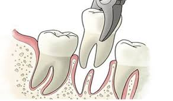
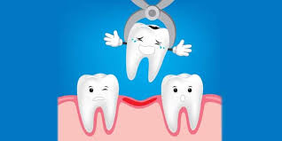
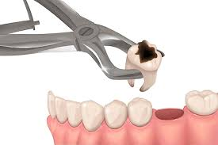

Extracciones Dentales Seguras y Sin Costo de Procedimiento!
Si tienes un diente que te causa dolor o problemas, te lo retiramos de forma gratuita bajo supervisión profesional.

Tu único gasto: Radiografía
Entre $140 y $180 pesos. Te ahorras hasta $1,200 pesos comparado con una clínica privada.
Proceso 100% Seguro
Usamos anestesia local (sin dolor), un profesor especialista aprueba todo, y damos seguimiento.
¿Qué es exactamente una extracción dental?
Es un procedimiento clínico menor, muy seguro y de rutina. Consiste en retirar de tu boca un diente que ya no tiene salvación. Se realiza siempre con anestesia local para que la zona quede adormecida y no sientas dolor durante el proceso.
¿Por qué necesito que me quiten el diente?
- • Caries muy avanzadas: Destrucción profunda que ya no se puede arreglar con resinas o endodoncia.
- • Infecciones graves: Absceso (infección con pus) en la raíz que pone en riesgo el hueso.
- • Fracturas irreparables: Dientes rotos por debajo de la encía.
- • Falta de espacio: Como ocurre frecuentemente con las muelas del juicio que empujan a los demás.

Los Beneficios (¿Qué ganas al hacértelo?)
Alivio inmediato
Eliminas de raíz la fuente del dolor.
Frenas la infección
Evitas que bacterias viajen por la sangre o dañen dientes vecinos.
Preparas el terreno
Dejas tu encía y hueso sanos para un futuro puente o implante.
¿Cómo te vamos a cuidar? (Nuestros 5 pasos)

Valoración
Nos contactas y revisamos tu boca.
Tu Historial
Anotamos tus datos de salud para protegerte.
Tu Radiografía
Te pedimos un estudio económico para ver la raíz (aprobado por profesor).
El Procedimiento
Hacemos la extracción con técnica cuidadosa.
Tu Recuperación
Te damos indicaciones médicas y te llamamos para ver cómo sigues.
Aliado de Recuperación
En Farmacia Dayamí encontrarás asesoría rápida y todos los medicamentos post-operatorios que te recetemos. Visitar farmacia.